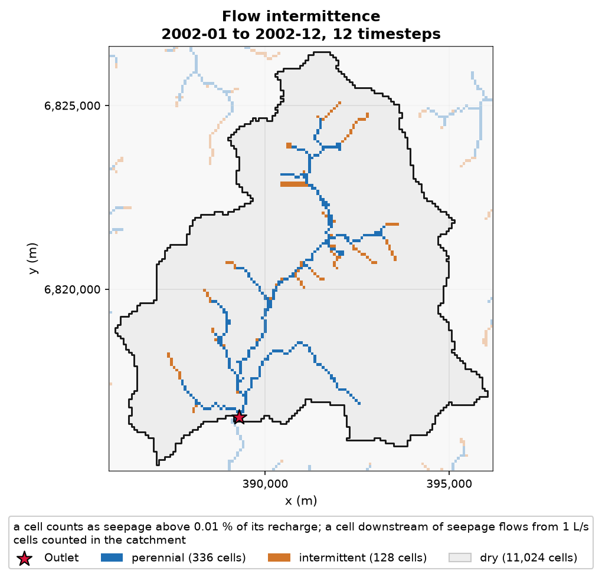
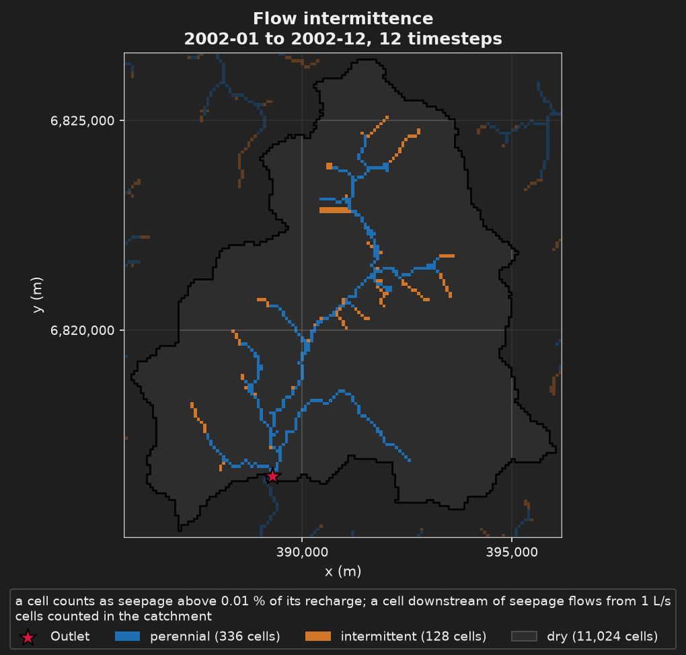

What HydroModPy does#
One map and five sentences first. The rest of the page says what the model computes, from what, with which assumptions, and when not to use it. It needs no prerequisite, and every technical term links to the glossary.




Fig. 1 Indicative Look at: the blue trunk that flows all year and the orange ends that dry up first. Does not show: which reaches dry up in the field, or any other year.#
Request variable = "simulated_active_network" with reduce = "frequency", year 2002, demonstration model of example 04.
HydroModPy computes, for a whole catchment and for each month, the level of the groundwater under the ground, from the relief, the properties of the rock and the rain that reaches the water table.
Where that level reaches the ground, water comes out: these points are the springs of the model.
The streams are what these springs feed downhill. On the map, a stream is blue when it flows all year, orange when it flows part of the year, and gray when it never flows.
This map is a demonstration, not a study of the catchment: it was not compared with observations of dry reaches, so it is labeled indicative. Other results carry the labels calibrated or numerical check, and the label says how far to trust them (reliability label).
Every result depends on assumptions and on data, so read its caption, its label and the limits before you decide anything with it.
What it automates#
One TOML file drives these steps, the same way on every catchment:
Catchment extraction from a digital elevation model.
Forcing and observations: recharge, climate series, groundwater heads, gauged discharge, mapped stream networks and intermittency.
Mesh and vertical discretization suited to shallow basement aquifers, with parameters given per zone, per pixel of a raster or per cell, in steady state or in transient.
Calibration that combines heads, discharge and the extent of the stream network to constrain the hydraulic properties.
Outputs that can be reopened, stored with their provenance and the licence of the data they come from, then drawn as figures or exported to standard formats.
In one diagram#
HydroModPy solves the flow of water in the saturated part of the ground of a catchment, the part that lies below the water table. For each cell of the map and each time step, it computes the height of the water table (the hydraulic head), given how much water arrives from the soil, how fast the ground carries and stores it, and where it can leave. Everything else (water table depth, seepage, flow, stream network) is derived from this.
The relief (a digital elevation model), the properties of the ground, the recharge, the thickness of the aquifer.
The hydraulic head of the water table in every cell, month after month, with drains at the ground surface through which water leaves the aquifer.
The water table depth, the seepage cells, the baseflow, the streams that flow or dry up, the water budget.
In example 04, the stream network is not an input. The model produces springs, and the network is derived from these springs. The mapped streams and the flow measured at the outlet are used to compare and to calibrate (see Calibration in two stages).
What it computes#
Result |
What it means in the model |
Where to read it |
|---|---|---|
The water table |
The hydraulic head of each cell, hence the elevation of the water table and its depth below the ground (never negative). |
|
Seepage |
The cells where the water table reaches the ground surface. Water leaves the aquifer there through a drain placed at the surface. |
|
Baseflow |
The water that leaves the aquifer through the drains, summed over the whole catchment: the groundwater part of the flow at the outlet. |
|
Intermittence |
For each month, the cells that flow. Over a year: always (perennial), sometimes (intermittent), never (dry). |
|
The budget |
What enters the aquifer (the recharge), what leaves it (the drainage) and the change in the stock of water. |
A note on the “simulated network”. A cell where the aquifer gives water back to the surface is a point where a stream appears, not a stretch of river. The model extends these cells downstream, following the slope of the ground, down to the outlet. This extension is the simulated network, the one that is compared with the map of streams. In this setup, which is the default, there is no hydraulic computation of the river. The How the model makes streams page shows the options that route the water along declared reaches.
What it is computed from#
Data |
Role |
In example 04 |
|---|---|---|
Relief |
It gives the ground surface, hence the elevation at which water leaves. It delimits the catchment from the outlet and tells where the water flows downstream. |
A digital elevation model, 75 m cells; 64.6 km² catchment traced from the outlet. |
Geology |
It sets how easily water moves (the hydraulic conductivity K) and the volume of water released when the water table drops (the specific yield Sy). One value for the whole aquifer, one per zone of a geological map, or one per pixel of a raster ([flow.param]). |
A single value of K and a single value of Sy for the whole catchment: the geological map is not used. Both are calibrated (Calibration in two stages). |
Recharge |
The water that reaches the water table. It is provided (a series from a file, or SIM2 data from Météo-France), or computed by a soil reservoir from rainfall and potential evapotranspiration (theory). |
A single monthly recharge series for the whole catchment, and a runoff series (data sources). |
Thickness |
The depth of the aquifer below the ground surface. It is an assumption, not a measurement. |
30 m everywhere. |
Observations |
The mapped network and the flow measured at the outlet are not part of the physical computation. They are used to compare the results and to calibrate K and Sy. |
The permanent stretches of the BD TOPO and the NANCON station. |
Where each dataset comes from is on Where the data come from.
In the drain setup of example 04, the solver is MODFLOW 6, the reference code of the United States Geological Survey (USGS). HydroModPy prepares the data, runs MODFLOW 6 and reads its results back. Other solvers exist, see Other solvers below.
The assumptions to keep in mind#
Each row says what the model assumes and what that changes when reading the maps. The rows marked “example 04” describe that configuration file, not the software: another model can lift them. The rows marked “drain setup” hold for the drain condition used in example 04 and not for the other conditions of How the model makes streams.
Assumption |
Consequence for reading |
|---|---|
Unconfined aquifer, a single layer of constant thickness below the ground (example 04: 30 m). |
No deep aquifer and no layers of different kinds. The depth of the water table cannot exceed the thickness of the model. |
Uniform K and Sy (example 04). |
The pattern of the water table mostly follows the relief. Geological contrasts are not represented. |
Water leaves through drains placed at the ground surface, in one direction only (drain setup). |
Water that leaves does not return to the aquifer. A river does not feed the aquifer in this setup. |
The efficiency of a drain depends on K and on the thickness of the clogging layer of the drain bed (How the model makes streams). |
The larger K is, the more the aquifer is drained. This is why the seepage network carries information on K. |
Identical recharge over the whole catchment, monthly average (example 04). |
No variation of rainfall from one hillside to another, or from one day to another within the month. |
One stress period per month, and the first month in steady state. |
The first month sets the starting state. The documentation of the setting that cuts a month into several steps, |
No hydraulic model of the rivers (drain setup). |
No water level, flood or propagation. A stream that “flows” means: the aquifer feeds it. |
The simulated network follows the slope of the ground downstream of the seepage cells. |
Its shape depends on the digital elevation model and on the cell size. |
If the recharge comes from the soil reservoir (theory): the soil ignores the height of the water table, and snow counts as rain. |
A high water table does not reduce the soil reserve. The documentation of the soil reservoir judges it unsuitable for a snow-covered catchment. Available with MODFLOW 6 only. |
The intended range of validity of the project, as the scientific documentation states it: shallow aquifers at catchment scale, unconfined or weakly confined, where the relief, the stream network and the geology organize the flow. Large deep sedimentary basins and coupled surface and atmosphere models fall outside this range. The limits are listed in the theory of the flow problem, and the page What “validated” means here says how far the model has been tested.
Other solvers#
Example 04 uses MODFLOW 6. HydroModPy runs two other flow solvers behind the same configuration file: MODFLOW-NWT, an older code of the same family, and a Boussinesq solver that is part of HydroModPy. They do not support the same boundaries or the same meshes. Lakes, reservoirs and routed streams, for example, need MODFLOW 6. The list of solvers says what each one supports. Every statement about the solver on this page is about example 04.
Calibration in two stages#
K cannot be measured at catchment scale. The model of example 04 infers it, a step called calibration, in two stages, with the method published by Abhervé et al. (2023, Hydrology and Earth System Sciences, 27, 3221-3239). The example file also cites their 2025 article for the second stage:
K is adjusted, in steady state, until the simulated seepage network matches the mapped network.
Sy is adjusted, in monthly transient state, against the flow measured at the outlet, with the first year used as spin-up.
Direct consequence: in a calibrated run, the map of the network and the flow curve show what was adjusted. Their agreement is expected. It does not prove on its own that the model is right. The page Reading the results comes back to this point map by map. The settings of this method are those of [calibration.protocol].
What it does not compute#
River hydraulics in the drain setup: water level, floods, propagation, storage in the riverbed. The routed stream option of MODFLOW 6 adds a routing of the water along declared reaches (How the model makes streams).
Surface runoff, unless it is provided as data (example 04) or, with the soil reservoir, for the sealed part of the surface. The groundwater model does not produce floods.
The unsaturated zone in detail. The soil reservoir is a simple budget (usable reserve, evapotranspiration, delay before reaching the water table), not an infiltration model.
Abstractions, unless they are declared as wells in the configuration.
Water quality. Solute transport and particle tracking exist separately and are not covered here. Neither are lakes and reservoirs, which exist as an option of MODFLOW 6.
The future by default. The model replays the forcings it is given. For a climate projection, projection data must be provided. Comparison with measurements then no longer makes sense.
The limits of this example#
A single catchment and three years: the result says nothing about the variability from one year to the next.
The figures and the numbers of Reading the results come from one calibrated run, described at the end of that page. A new run gives different values.
No comparison with piezometer levels or with field flow observations: example 04 does not use them.
A 75 m cell: a map is read at the scale of the hillside, not of the field.
When not to use this#
HydroModPy is built for shallow groundwater at the scale of a catchment. Do not rely on it for these cases, or only with an expert.
Deep or confined aquifers, and large sedimentary basins. The model describes a shallow aquifer whose top rises and falls with the recharge. See the limits in the theory.
Aquifers where water moves mostly through conduits, such as karst. The model treats the ground as a continuous porous medium.
Floods and river hydraulics. In the default setup there is no water level, no flood and no travel time in the channel (How the model makes streams).
Decisions at the scale of a field or a plot. A cell is 75 m wide in example 04, and a map is read at the scale of the hillside.
Water quality, unless a transport computation has been set up for it. The maps of this part of the site are about water, not about what it carries.
Climate projections taken as forecasts. The model replays the forcing it is given. A projection is only as good as the climate data and the evaluation behind it.
A single result taken as certain. Read a result as an indication unless it was validated (What “validated” means here, How sure is the model?).
One catchment as a common thread#
The pages rely on example 04 of HydroModPy: the Nançon catchment (Ille-et-Vilaine, 64.6 km²), simulated from 2000 to 2002 with a monthly step. The example shows how the seepage network grows in winter and shrinks in summer, and how the hydraulic conductivity and the specific yield of the aquifer are calibrated against the mapped network and against the flow measured at the outlet.
This is a demonstration example. Its results illustrate how to read the outputs. They are not a study of the catchment.
Next: Reading the results.